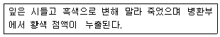
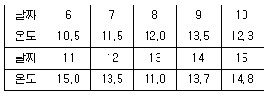
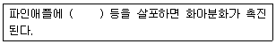
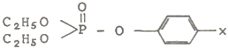
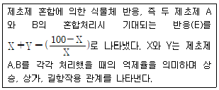

식물보호기사 (2015-05-31 기출문제)
1과목: 식물병리학
1. 기생성 종자식물이 수목에 미치는 주요 피해로 거리가 먼 것은?
- 국부적 이상 비대
- 기주로부터 양분과 수분 탈취
- 저장물질의 변화 및 생장 둔화
- 태양광선의 차단에 의한 생장 불량
(정답률: 69%)

2. 벼 오갈병의 주요 매개충은?
- 애멸구
- 진딧물
- 딱정벌레
- 끝동매미충
(정답률: 82%)
3. 식물 바이러스에 대한 설명으로 옳은 것은?
- 원생동물에 속한다.
- 원핵생물에 속한다
- 진핵생물에 속한다
- 세포를 갖고 있지 않다
(정답률: 67%)
4. 맥류에 발생하는 줄기녹병의 중간기주는?
- 잣나무
- 향나무
- 매자나무
- 매발톱나무
(정답률: 77%)
5. 어떤 유제(50%)를 1000배로 희석하여 150L를 살포하려 한다면 이 유제의 소요량은?
- 15ml
- 75ml
- 150ml
- 300ml
(정답률: 74%)
6. 식물병을 측장할 때 병든 식물체 조직의 면적 또는 양의 비율을 나타내는 것으로 주로 식물체의 전체면적당 발병 면적을 기준으로 하는 것은?
- 발병도
- 발병률
- 수량손실
- 병진전 곡선
(정답률: 65%)
7. 뿌리에 선충의 피해를 받은 수목이 지상부에 나타나는 증상이 아닌것은?
- 황화
- 반점
- 시들음
- 성장저해
(정답률: 57%)
8. 일반적으로 세균의 플라스미드(plasmid)에 의해 지배되는 형질로 거리가 먼 것은?
- bacteriocin 생성
- 편모의 구조 결정
- 항생제에 대한 내성
- 기주에 대한 병원성
(정답률: 65%)
9. 국내에 발생하는 채소류의 균핵병에 대한 설명으로 옳지 않은 것은?
- 병원균은 sclerotinia sclerotiorum 이다
- 자낭포자나 균핵에서 발아한 균사로 침입한다
- 발병 후기에는 발병조직에 백색 균사가 나타난다
- 균핵이 땅 속에 묻혀 있다가 고온(25℃이상)이 되면 발아한다
(정답률: 73%)
10. 다음 설명 중 병의 표징은?

- 말라 죽음
- 황색 점액
- 잎의 시들음
- 흑색으로 변함
(정답률: 78%)
11. 벼 잎집무늬마름병(잎집얼룩병)의 발생조건으로 가장 거리가 먼 것은?
- 밀식
- 비료 과다
- 늦은 파종
- 고온 다습
(정답률: 64%)
12. 균류에 의해 발생하는 수목병이 아닌 것은?
- 뽕나무 오갈병
- 벚나무 빗자루병
- 낙엽송 잎떨림병
- 은행나무 잎마름병
(정답률: 72%)
13. 식물병을 진단하는데 있어 해부학적 진단방법은?
- 괴경지표법
- 유출검사법
- 파지의 검출
- 코흐(Koch)의 원칙
(정답률: 64%)
14. 수목 뿌리에 많이 발생하며 목재생산에 피해를 주는 자주날개무늬병이 속하는 진균류는?
- 난균
- 병꼴균
- 담자균
- 접합균
(정답률: 80%)
15. 식물병 저항성 관련 용어 중 나머지 셋과 의미가 다른 하나는?
- 포장 저항성
- 수평 저항성
- 진정 저항성
- 레이스 비특이적 저항성
(정답률: 57%)
16. 비생물학적 병원에 의해 발생하는 생리병해에 대한 설명으로 옳은것은?
- 병징만 나타난다
- 표징만 나타난다
- 병징과 표징이 모두 나타난다
- 환경적이 영향에 의해 표징이 나타날 수도 있다
(정답률: 68%)
17. 식물병으로 인한 피해에 대한 설명으로 옳지 않은 것은?
- 20세기 스리랑카는 바나나 시들음병으로 인하여 관련 산업이 황폐화했다
- 19세기 아일랜드 지방에 감자 역병이 크게 발생하여 100만명 이상이 굶어 죽었다
- 20세기 미국동부지방 주요 수종인 밤나무는 밤나무 줄기마름병으로 큰 피해를 입었다
- 20세기 미국 전역에서 옥수수 깨씨무늬병이 크게 발생하여 관련 제품 생산에 큰 차질을 가져왔다
(정답률: 79%)
18. 대추나무의 빗자루병 방제를 위하여 옥시테트라사이클린 수화제로 수간주사를 하려고 한다. 다음 설명으로 옳지 않은 것은?
- 사용 적기는 3월초이다
- 안전사용기준은 수확 30일 전가지 사용하는 것이다
- 수돗물 1L에 약제 5g을 정량한 후 잘 저어서 녹인다
- 흉고직경이 15cm이상인 경우 1회에 1.5L~2L주입한다
(정답률: 53%)
19. 병원균의 병원성 분화형을 결정하기 위하여 사용하는 일군의 기주 품종을 무엇이라고 하는가?
- 생태품종
- 판별품종
- 생리적 품종
- 저항성 품종
(정답률: 77%)
20. 곰팡이의 대사산물 중 사람이나 척추동물에 생리적 장해를 일으키는 것이 알려진 병원균과 독소가 바르게 짝지어진 것은?
- Alternaria alternata-citrinin
- Penicillium citrinum-ochratoxin
- Aspergillus clavatus-tenuazoic acid
- Fusarium graminearum-zearalenone
(정답률: 57%)
2과목: 농림해충학
21. 향나무하늘소의 주요 가해 부위는?
- 잎
- 줄기
- 뿌리
- 열매
(정답률: 80%)
22. 곤충의 청각기관이 아닌 것은?
- 고막기관
- 존스턴 기관
- 종상감각기관
- 무릎아래기관
(정답률: 64%)
23. 배자발육 과정 중 외배엽성 세포들이 함입하여 이루어진 기관이 아닌 것은?
- 중장
- 전장
- 후장
- 기관지
(정답률: 60%)
24. 유충이 주로 사과나무,복숭아나무 등 과실수의 잎을 가해하며, 1년에 6회 발생하지만 최근에는 발생이 드문 해충은?
- 솔나방
- 혹명나방
- 은무늬굴나방
- 미국흰불나방
(정답률: 56%)
25. 고시류(Paleoptera)곤충에 속하는 것은?
- 밀잠자리
- 담배나방
- 분홍날개대벌레
- 밤애기잎말이나방
(정답률: 68%)
26. 배나무이의 분류학적 위치는?
- 나비목
- 노린재목
- 사마귀목
- 딱정벌레목
(정답률: 80%)
27. 곤충의 선천적 행동이 아닌 것은?
- 반사
- 정위
- 조건화
- 고정행위양식
(정답률: 71%)
28. 곤충의 생리에 대한 설명으로 옳지 않은 것은?
- 기관호흡을 한다
- 연속되는 탈피를 통해 몸을 키운다
- 완전변태류의 경우 번데기 과정을 거친다
- 혈액 속 헤모글로빈에 의해 산소를 공급받는다
(정답률: 81%)
29. 중국으로부터 비래하는 것으로 우리나라에서 월동하며 벼에 바이러스병을 매개하는 것은?
- 애멸구
- 꽃매미
- 벼멸구
- 흰등멸구
(정답률: 71%)
30. 해충의 발생 및 피해에 대한 설명으로 옳지 않은 것은?
- 해충번식력은 번식능력과 환경저항과의 관련에 따라 증감한다
- 피해사정식이란 해충의 가해와 감수량과의 관계를 표시한 것이다
- 환경저항에는 기상 등의 물리적 요인과 천적 등의 생물적 요인이 포함된다
- 번식능력을 산정할 때 성비란 (수컷의 수)÷(암컷과 수컷의 수)에 의한 값을 말한다
(정답률: 83%)
31. 일반적으로 온대지방에서 1년에 1회 발생하는 해충은?
- 땅강아지
- 벼룩잎벌레
- 파총채벌레
- 거세미나방
(정답률: 53%)
32. 기계유 유제의 작용특성에 대한 설명으로 옳은 것은?
- 식독제로서 해충 위에서 소화중독시킨다
- 해충 신경에 작용하여 이상흥분을 일으킨다
- 해충 겉표면에 피막을 형성하여 기문이나 기관을 막아 질식사시킨다
- 침투성 살충제로서 작용점인 원형질에 도달하여 에너지 생성계의 효소에 저해작용을 한다
(정답률: 80%)
33. 겨울을 나기 위하여 유충으로 동면하는 것은?
- 벼애나방
- 벼메뚜기
- 보리굴파리
- 이화명나방
(정답률: 68%)
34. 어떤 곤충의 발육영점온도가 11℃이다.월동 중 4월 6일부터 15일까지 10일 동안 일일평균온도가 아래와 같을 때 이 곤충의 10일간 발육적산온도(일도)는?

- 16.8
- 17.3
- 17.8
- 18.3
(정답률: 50%)
35. 담배나방 유충에 대한 설명으로 옳지 않은 것은?
- 어린 유충은 주로 잎을 가해한다
- 땅 속에서 월동하고 나서 번데기가 된다
- 제3령 이후에는 낮에는 잎 뒷면에 숨는다
- 부화 유충은 밤낮을 가리지 않고 가해한다
(정답률: 62%)
36. 곤충의 내부구조 중 주요 역할이 체내 수분의 증산을 억제하는 기능을 갖는 것은?
- 외표피
- 원표피
- 내원표피
- 진피세포
(정답률: 74%)
37. 곤충의 생식기관은 배자발육에서 어느 부분이 발달된 것인가?
- 내배엽
- 외배엽
- 중배엽
- 극세포
(정답률: 46%)
38. 알락하늘소는 어떤 형태로 월동하는가?
- 알
- 유충
- 성충
- 번데기
(정답률: 59%)
39. 부화유충이 처음 과일 표면을 식해하다가 과일내부로 뚫고 들어가 가해하는 해충은?
- 배나무이
- 사과굴나방
- 포도유리나방
- 복숭아심식나방
(정답률: 78%)
40. 곤충 분류학상 외시류가 아닌 것은?
- 매미
- 밑들이
- 집게벌레
- 하루살이
(정답률: 51%)
3과목: 재배학원론
41. 다음 중 중금속을 불용화 상태로 만드는 방법이 아닌 것은?
- 석회질 비료 시용
- 환원물질 시용
- 건조재배
- 제올라이트 등의 점토광물 시용
(정답률: 69%)
42. 식물의 일장감응 중 SI형 식물은?
- 메밀
- 토마토
- 도꼬마리
- 코스모스
(정답률: 51%)
43. 중경의 이점으로 틀린 것은?
- 모세관이 절단되어 토양수분의 증발이 증대한다
- 피막을 부숴 주어 발아가 조장된다
- 토양통기 조장으로 생장이 왕성해 진다
- 중경으로 비료가 환원층으로 섞여들어 비효가 증대된다
(정답률: 68%)
44. 과수의 결과습성에서 1년생 가지에 결실하는 과수는?
- 사과
- 복숭아
- 포도
- 양앵두
(정답률: 60%)
45. 맥류의 기계화 재배를 위한 품종이 갖추어야 할 조건에 대한 설명으로 틀린 것은?
- 내도복성이 극히 강해야 한다
- 한랭지에서는 특히 내한성이 강한 품종을 선택 한다
- 초장이 70cm 정도 크기가 알맞다
- 초형이 직립형 보다 수평형이 알맞다
(정답률: 76%)
46. 타식성 작물 중 암술과 수술이 서로 다른 개체에서 생기는 것은?
- 자성불임
- 웅성불임
- 자웅이주
- 이형예현상
(정답률: 79%)
47. 이식재배의 장점으로 적절하지 않은 것은?
- 생육기간 연장에 따른 증수
- 근채류의 근계 발육 촉진
- 토지이용율의 증대
- 생육촉진 및 숙기단축
(정답률: 48%)
48. 식물체 내의 수분 포텐셜을 좌우하는 것은?
- 삼투압포텐셜,압력포텐셜
- 압력포텐셜,매트릭포텐셜
- 삼투압포텐셜,매트릭포텐셜
- 매트릭포텐셜, 중력포텐셜
(정답률: 73%)
49. 토양멀칭(soil mulching)에 대해 옳은 것은?(오류 신고가 접수된 문제입니다. 반드시 정답과 해설을 확인하시기 바랍니다.)
- 폴리에틸렌 등의 플라스틱필름을 피복하는 것
- 포장의 표토를 곱게 중경하면 하층과 표면의 모세관이 단절되고 표면에 건조한 토층이 생기는 것
- 앞작물의 그루터기를 그대로 남겨서 풍식과 수식을 경감시키는 것
- 포장토양의 표면을 짚.퇴비 등 여러 가지 재료로 피복하는 것
(정답률: 49%)
50. 내건성이 강한 식물의 특성으로 틀린 것은?
- 급수할 때 수분을 흡수하는 기능이 크다
- 당분의 소실이 빠르다
- 광합성이 감퇴하는 정도가 낮다
- 호흡이 낮아지는 정도가 크다
(정답률: 68%)
51. 춘화처리(Vernalization)에 대한 설명으로 옳은 것은?
- 일정기간 인위적인 저온을 주어 화성을 유도하는 것
- 봄에 꽃이 피도록 고온 처리하는 것
- 월동작물을 겨울에 일장 처리하는 것
- 식물이 잘 자랄 수 있도록 온도와 일장을 처리하는 것
(정답률: 70%)
52. 작물의 형질 중 연속 변이와 불연속 변이의 예가 올바르게 연결된 것은?
- 연속변이-초장,엽장
불연속 변이-건물중,출수기 - 연속변이-엽색,엽장
불연속 변이-분지수,엽중 - 연속변이-초장,수장
불연속 변이-화색,까락 유무 - 연속변이-출수기,종피색
불연속 변이-건물중,숙기
(정답률: 69%)
53. 광부족에 적응성이 가장 약한 작물은?
- 당근
- 강낭콩
- 딸기
- 감자
(정답률: 45%)
54. ( )안에 알맞은 내용은?

- NAA
- MH-30
- Rh-531
- AMO-1618
(정답률: 72%)
55. 농업경영적 효과측면에서 작부체계에 대한 설명으로 옳은 것은?
- 병충해 발생증가
- 잡초발생 증가
- 지력감소 효과
- 경지 이용도 제고 효과
(정답률: 75%)
56. 곡물건조 시 제거 대상이 되는 주된 수분은?
- 자유수
- 결합수
- 모관수
- 흡습수
(정답률: 53%)
57. 다음 중 작물의 기원지가 중국인 것은?
- 담배
- 호프
- 목화
- 팥
(정답률: 71%)
58. 메벼의 무망종을 선종할 때 알맞은 비중은?
- 1.08
- 1.10
- 1.13
- 1.22
(정답률: 63%)
59. 산성토양에서 용해도가 낮아져 작물생육에 부족하기 쉬운 원소는?
- 철
- 망간
- 마그네슘
- 아연
(정답률: 61%)
60. 2년 휴작이 필요한 작물은?
- 토란,무
- 잠두,오이
- 참외,사탕무
- 강낭콩,토당귀
(정답률: 45%)
4과목: 농약학
61. 유기인계 살충제의 일반적인 특성에 대한 설명으로 틀린 것은?
- 잔효력이 길다
- 흡즙해충에 유효하다
- 인축에 대한 독성이 비교적 강하다
- 알칼리성 물질에 의하여 분해되기 쉽다
(정답률: 56%)
62. 주로 접촉제 및 소화중독제로서 작용하며 벼의 이화명 나방에 적용되는 유기인제는?
- DDVP제
- 메프제
- EPN제
- 파라치온제
(정답률: 45%)
63. 가스크로마토그래피에 의해 분석하고자 할 때 전자포획검출기(ECD) 로 분석을 가장 용이하게 할 수 있는 농약은?
- Chlorothalonil
- Dichlorvos
- Parathion
- EPN
(정답률: 59%)
64. 농약을 희석액으로 살포에 의하지 않고 농약의 유효성분을 병충해 등 서식부위에 직접적으로 접촉하게 하는 사용방법이 아닌 것은?
- 분무법
- 훈증법
- 도포법
- 도말법
(정답률: 41%)
65. 뷰타클로르 6%입제를 10a 당 성분량으로 150g살포하고자 한다. 이 때 필요한 제품량은?
- 2000g
- 2500g
- 3000g
- 5000g
(정답률: 66%)
66. 불합리한 농약의 혼용은 약효의 경감, 약해의 원인, 또는 급성독성의 현저한 증가를 야기한다. 농약 혼용 시 주의할 사항이 아닌 것은?
- 혼용에 의한 활성의 변화
- 혼용에 의한 화학적 변화
- 혼용에 의한 물리성의 변화
- 혼용에 의한 살포시기의 변화
(정답률: 76%)
67. 보르도액을 조제할 때 주의해야 할 사항으로 틀린 것은?
- 교반용 막대는 나무 제품이어야 한다
- 석회유에 황산구리 용액을 첨가해야 한다
- 황산구리 및 석회석은 순도가 높아야 한다
- 액을 교반할 때 따뜻한 상태에서 반응이 잘 된다
(정답률: 66%)
68. 어독성 검정은 보통 잉어를 사용하는데 약제처리 후 며칠 만에 조사하여 독성을 구분하는가?
- 1일(24시간)
- 2일(48시간)
- 5일(120시간)
- 10일(240시간)
(정답률: 75%)
69. 메프(Fenitrothion) 유제(50%)를 1000배로 희석하여 10a당 8말(160L)을 살포하려고 할 때 Femitrothion유제의 소요량은 약 몇 ml?
- 80
- 120
- 160
- 320
(정답률: 66%)
70. 주성분manganese ethylenebis(dithiocarbamate)의 아연 배위화합물로서 광범위한 작물에 탄저병을 포함한 광범위한 병해에 보호살균제로 사용되는 농약은?
- 빈졸(Vincolzolin)
- 이프로(Iprodione)
- 훼나진(Phenazine)
- 만코제브(Mancozeb)
(정답률: 79%)
71. 비등점이 낮은 농약의 원제를 액상,고상 또는 압축가스의 형태로 용기에 충전한 것을 열어 대기 중에 가스상으로 방출시켜 병해충을 방제하는 농약 제형은?
- 훈증제
- 연무제
- 훈연제
- 플로우더스트제
(정답률: 72%)
72. 농약의 액제 제형을 제조할 때 겨울에 동결을 방지하기 위하여 주로 사용하는 것은?
- 석고(Gypsum)
- 규조토(Diatomite)
- 황산아연(Zinc sulfate)
- 에틸렌글리콜(Ethylene glycol)
(정답률: 69%)
73. 다음 중 잡초생육기 처리용 비선택성 제초제는?
- 헥사지논
- 피리벤족심
- 피라졸레이트
- 글리포세이트포타슘
(정답률: 70%)
74. 다음 살충제에서 X가 어떤 치환기일 때 cholinesterase에 대한 저해력이 가장 강한가?

- P-NO2
- P-SCH3
- P-CI
- P-CN
(정답률: 43%)
75. 다음 중 농약의 사용목적에 따른 분류에 해당하는 것은?
- 유제농약
- 유기인제농약
- 살충제농약
- 잔류성농약
(정답률: 76%)
76. 처리 후 식물체 내로 침투이행이 잘되고 약효지속시간도 긴 유기유황제 살균제는?
- 베노밀
- 베날락실엠
- 아이소티아닐
- 아이소프로티올레인
(정답률: 45%)
77. 다음 중 살비제(살응애제)의 작용점 및 작용기작과 같은 양상을 나타내는 농약은?
- 살균제
- 제초제
- 살선충제
- 살충제
(정답률: 58%)
78. 농약 잔류성 등에 대한 설명으로 옳은 것은?
- 작물잔류성농약이란 농약의 성분이 살포된 작물에 잔류하여 곤충이나 생태계를 파괴할 우려가 있는 농약을 말한다
- 토양잔류성농약이란 토양 중 농약의 반감기가 1년 이하인 농약으로 토양에 잔류하여 지하수 오염의 우려가 있는 농약을 말한다
- 수질잔류성농약이란 48시간 이내에 잉어의 반수치사농도를 10a 당 농약사용량에 대한 유효성분량으로 나눈 값이 1.0 이상인 것이다
- 실험동물에 매일 일정량의 농약을 혼합한 사료를 장시간 투여하여 2세대 이상에 걸쳐 전혀 건강에 이상이 없는 양을 무작용량이라 한다
(정답률: 41%)
79. 다음 중 직접살포제가 아닌 것은?
- 미립제
- 세립제
- 유탁제
- 저비산분제
(정답률: 62%)
80. 농가에서 가장 많이 사용하는 살포액 조제방법은?
- 비중 조제법
- 배액 조제법
- 퍼센트액 조제법
- 피피엠(ppm)액 조제법
(정답률: 69%)
5과목: 잡초방제학
81. 다음 중 개체 당 종자생산량이 가장 많은 특징을 지닌 잡초는?
- 망초
- 개비름
- 강아지풀
- 쇠비름
(정답률: 64%)
82. 페녹시카르복실계 제초제의 일반적 특성으로 틀린 것은?
- 이 계열의 제초제는 식물의 분열조직(생장점)에 집적된다
- 광합성 산물이나 증산류와 함께 이동하는 이행형 호르몬형 제초제이다
- 토양 표면을 뚫고 나오는 신초나 뿌리에 의해 흡수되고 토양 잔효성이 1-3개월이다
- 일년생 및 다년생 광엽잡초가 감수성을 띄며,잡초 발생 후에 처리하는 제초제이다
(정답률: 45%)
83. 식물의 종간경합에 해당하는 것은?
- 식물과 식물의 경합
- 서로 다른 종간의 경합
- 같은 종간의 경합
- 같은 종내의 개체간의 경합
(정답률: 72%)
84. 다음(보기)의 제초제 상호작용에 대한 식물의 반응을 평가하는 방법은?

- Growing의 방법
- Dew의 경합지수법
- Colby의 방법
- Isobole 방법
(정답률: 62%)
85. 제초제 계통의 일반적인 주요 작용기작이 잘못 연결된 것은?
- triazine계-광합성 저해제
- sulfonylurea계-세포분열억제
- urea계-광합성저해
- diphenylether계-세포막 파괴
(정답률: 52%)
86. 경제적 허용한계 잡초밀도(economic threshold level)란?
- 허용한계밀도 보다 약간 낮은 수준의 잡초생장이 허용되는 잡초밀도
- 잡초의 밀도가 어느 밀도 이하로 존재하면 작물의 수량이 현저히 증가되는 수준의 밀도
- 잡초의 밀도가 어느 밀도 이상으로 존재하면 작물의 수량이 현저히 감소되는 수준의 잡초밀도
- 제초비용과 방제로 인한 수량이득이 상충되는 수준의 밀도를 허용한계밀도에 추가하여 허용한 잡초밀도
(정답률: 44%)
87. 피의 형태적 특징으로 옳은 것은?
- 엽설(잎혀)은 없고, 엽이(잎귀)는 있다
- 엽설(잎혀)은 있고,엽이(잎귀)는 없다
- 엽설(잎혀)과 엽이(잎귀)모두 있다
- 엽설(잎혀)과 엽이(잎귀)모두 없다
(정답률: 72%)
88. 두 제초제를 혼합시 나타내는 길항적반응(antagonism)이란?
- 혼합의 효과가 활성이 높은 물질의 단독효과보다 작은 것을 의미
- 혼합시의 효과가 단독처리시의 효과보다 큰 것을 의미
- 혼합시의 효과가 단독처리시의 효과와 같은 것을 의미
- 혼합시의 효과가 단독처리시의 효과보다 크지도 작지도 않은 것을 의미
(정답률: 68%)
89. King(1966)의 발아 5단계설 중 2번째 단계에 해당하는 것은?
- 세포분열과 신장의 대사단계
- 흡수과정
- 전분의 가수분해과정
- 종근 및 유아의 신장
(정답률: 50%)
90. 생태적 잡초방제를 위한“재배관리의 합리화 방법”이 아닌 것은?
- 작물을 충실하게 키워 경합력을 높인다
- 적기 적량의 시비기술로 작물의 초관형성을 촉진시킨다
- 잡초에 불리한 윤작체계로 재배한다
- 청결한 작물종자를 선택하거나 다시 정선하여 파종한다
(정답률: 65%)
91. 무처리 잡초건물중이 250g이고 A처리 잡초건물중이 50g일 때 A처리의 잡초 방제가는?
- 50%
- 65%
- 80%
- 95%
(정답률: 59%)
92. 다음 중 제초제의 상호작용이 아닌 것은?
- 상가작용(addition)
- 길항작용(antagonism)
- 결합작용(conjugation)
- 상승작용(synergism)
(정답률: 60%)
93. 동일약제에 대한 작물과 잡초의 반응차를 표현할 수 있는 것은?
- 선택성지수
- 제초활성
- 조류검정
- 생장반응검정
(정답률: 52%)
94. 다음 C3 및 C4식물의 대사특성 비교 중 틀린 것은?
- C3 나트륨: 불필요, C4:필요
- C3 광호흡: 아주 낮음, C4:광호흡: 높음
- C3광합성 최적온도:15-25도
C4:광합성 최적온도:30-45도 - C3 잎구조:엽록체가 풍부한 엽육세포
C4 잎구조:엽록체를 가지며 잘 발달된 유관속초세포
(정답률: 56%)
95. 잡초방제의 목적이 아닌 것은?
- 작물 수량증가
- 토양 물리성 개선
- 농작물 품질 향상
- 병해충 서식처 제거
(정답률: 76%)
96. 땅콩 포장에 문제가 되는 잡초종으로만 나열된 것은?
- 강아지풀,깨풀
- 너도방동사니,쇠비름
- 마디꽃,돌피
- 강아지풀,쇠털골
(정답률: 50%)
97. 제초제의 토양 중 지속성은 반감기(half life)로 나타낸다,이 때 반감기란? (단, 전 기간을 통하여 동일한 기울기를 갖는 1차 반응식을 전제로 함)
- 처리한 제초제의 1/2이 소실되는데 요하는 시간
- 처리한 제초제의 1/5이 소실되는데 요하는 시간
- 식물체의 1/2를 고사시키는데 필요한 시간
- 식물체의 1/5을 고사시키는데 필요한 시간
(정답률: 74%)
98. 잡초종자의 휴면이 종피에 기인한 것이 아닌 것은?
- 가스교환의 방해
- 물의 투수성 방해
- 배의 불완전 또는 미숙
- 배의 생장에 대한 기계적 장해
(정답률: 55%)
99. 생태적 잡초방제에 있어서 환경제어법의 설명으로 옳은 것은?
- 작물에 재식밀도를 높여서 초관형성을 촉진시키는 수단을 말한다
- 작물에는 유리하고 잡초에는 불리하도록 인위적으로 환경을 조성해주는 것을 말한다
- 작물의 양질 다수와 함께 잡초와의 경합력이 큰 작목.품종과 우량종자를 고르는 것을 말한다
- 묘상에서 자란 유묘를 본포에 이식하여 잡초보다 빠르게 초관을 형성하게 하는 수단을 말한다
(정답률: 76%)
100. 천적을 이용한 생물학적 잡초방제법에서 천적이 갖추어야 할 전제조건이 아닌 것은?
- 포식자로부터 자유로워야 한다
- 지역환경에 쉽게 적응하여야 한다
- 접종지역에서의 이동성이 낮아야 한다
- 숙주를 쉽게 찾을 수 있어야 한다
(정답률: 75%)